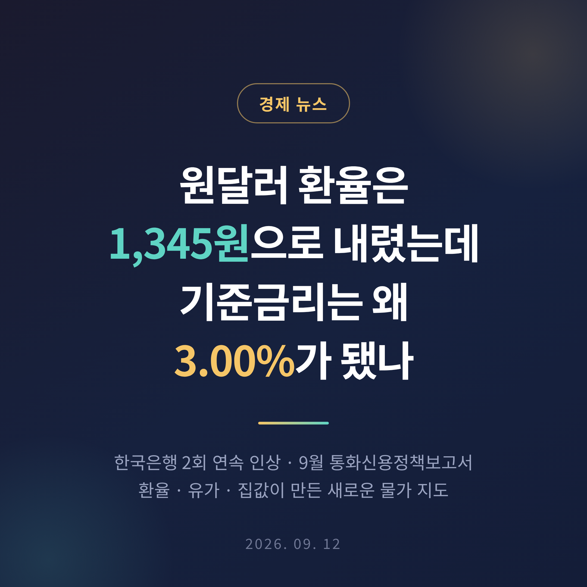
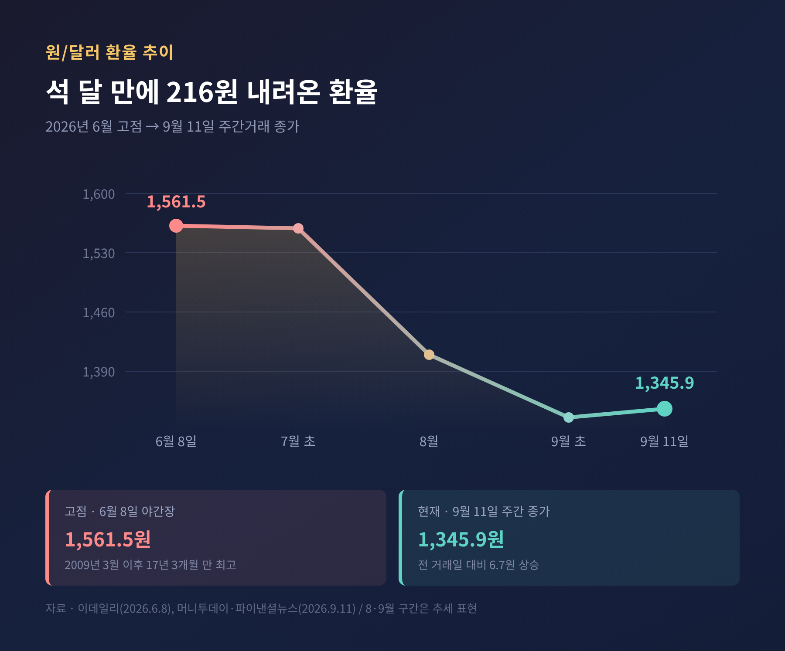
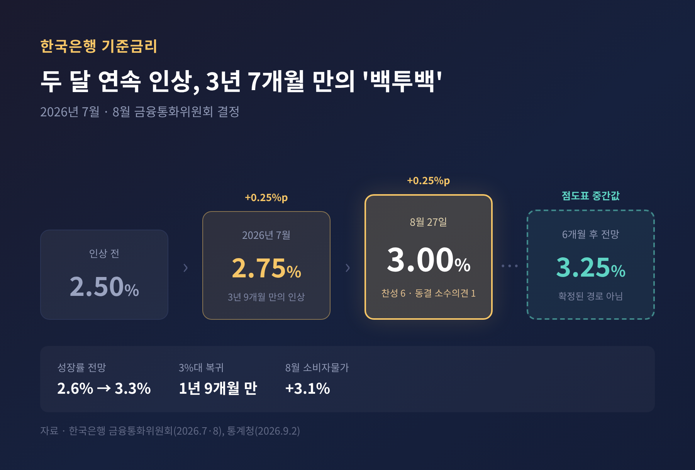
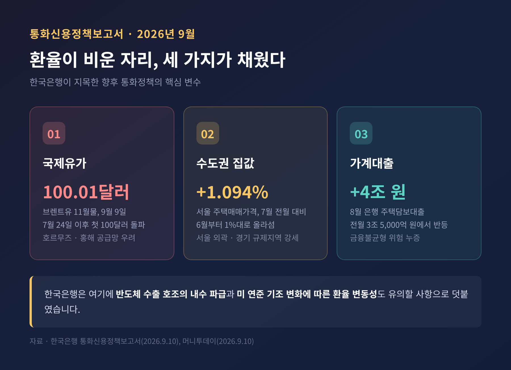
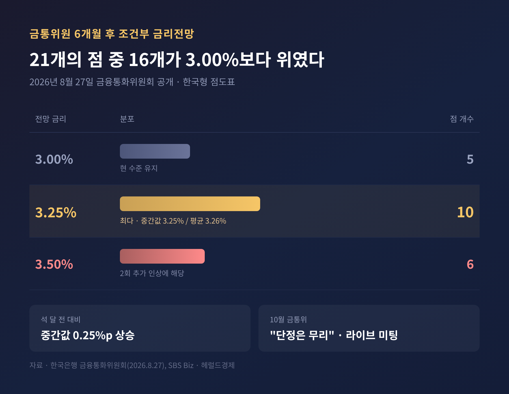
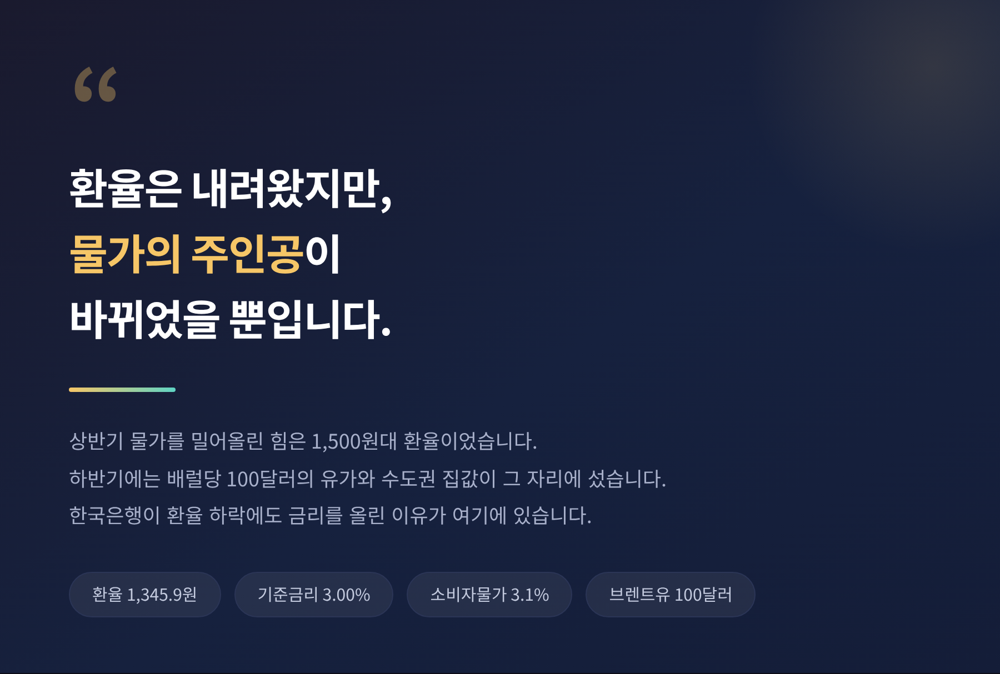

이번 글에서는 2026년 9월 현재의 원달러 환율과 기준금리를 함께 정리해 보겠습니다. 석 달 전만 해도 1,600원을 걱정하던 환율이 지금은 1,340원대입니다. 그런데 한국은행은 그사이 금리를 두 번 올렸습니다.
2026년 6월 8일, 원달러 환율은 야간장에서 1,561.5원까지 치솟았습니다. 글로벌 금융위기 한복판이던 2009년 3월 이후 17년 3개월 만의 최고치였습니다.
시장은 술렁였습니다. 당시 기사 제목에는 1,600원이라는 숫자가 오르내렸습니다.
그리고 9월 11일, 서울외환시장의 주간거래 종가는 1,345.9원이었습니다. 전 거래일보다 6.7원 오른 값입니다.
고점에서 216원 가까이 내려온 셈입니다. 7월 장중 고점과 9월 7일 저점만 비교하면 하락 폭은 224.5원에 이릅니다.
같은 기간 한국은행은 반대로 움직였습니다. 7월에 기준금리를 연 2.50%에서 2.75%로 올렸습니다. 3년 9개월 만의 인상이었습니다. 8월 27일에는 다시 3.00%로 올렸습니다. 두 달 연속, 이른바 '백투백' 인상입니다.
기준금리가 3%대에 올라선 것은 2024년 11월 이후 1년 9개월 만입니다.

보통은 이렇게 읽습니다. 환율이 오르면 수입 물가가 오르고, 물가가 오르면 중앙은행이 금리를 올린다.
예전엔 그 순서가 잘 들어맞았습니다. 지금은 순서가 흐트러졌습니다.
환율이 내려왔는데도 금리는 올라갑니다. 이 어긋남이 지금 한국 경제를 읽는 첫 번째 열쇠입니다.
이유는 두 가지입니다.
하나는 한국은행이 이번 인상을 위기 대응이 아니라 경기 대응으로 보고 있다는 점입니다. 한국은행은 8월 금통위에서 2026년 성장률 전망치를 5월의 2.6%에서 3.3%로 0.7%포인트 끌어올렸습니다. 경기가 꺾여서 올린 금리가 아니라, 경기가 좋아서 올린 금리입니다.
다른 하나는 물가를 밀어올리는 힘의 출처가 바뀌었다는 점입니다. 상반기에는 환율이었습니다. 하반기에는 유가와 자산시장입니다.
세 가지가 겹쳤습니다.
첫째, 수출기업이 달러를 팔기 시작했습니다. 상반기 내내 "원화 약세가 더 갈 것"이라며 환전을 미뤄두었던 기업들이, 고점이라는 인식이 퍼지자 쌓아둔 달러를 시장에 내놓았습니다.
둘째, 반도체 자금이 들어왔습니다. 반도체 수출 호조에 따른 외화 유입이 수급의 방향을 돌려놓았습니다.
셋째, 달러 자체가 약해졌습니다. 미국 연방준비제도가 금리를 더 올리지 않으리라는 관측이 퍼진 영향입니다.
당국의 대응도 있었습니다. 6월 8일 오전 11시 45분, 윤경수 한국은행 국제국장과 이형렬 재정경제부 국제금융국장은 공동으로 '외환당국 메시지'를 냈습니다. 펀더멘털 대비 과도한 변동성과 일방향 쏠림은 결코 용인하지 않겠다는 내용이었습니다. 그해 두 번째 공식 구두개입이었습니다.
하루 전인 6월 7일에는 구윤철 부총리 겸 재정경제부 장관 주재로 긴급 시장상황점검회의, 이른바 F4 회의가 열렸습니다. 신현송 한국은행 총재, 이억원 금융위원장, 이찬진 금융감독원장이 함께 앉았습니다. 약 100조 원 규모의 시장안정 프로그램은 지금도 가동 중입니다.
이재명 대통령은 같은 날 취임 1년 기자회견에서 "지금 정상은 아닌 것 같다, 일시적 현상이라고 봐야 한다"고 말했습니다. 급등의 원인으로는 국내 주식시장 급등에 따른 외국인 투자자의 포트폴리오 조정을 지목했습니다.
결과적으로 그 판단은 들어맞았습니다. 다만 환율이 내려온 힘의 상당 부분은 개입이 아니라 수급이었다고 보는 편이 정확할 것입니다.
한 가지 더. 8월 말 외환보유액은 4,422억 8,000만 달러로, 한 달 사이 143억 3,000만 달러가 늘었습니다. 1971년 월별 통계를 시작한 이후 가장 큰 증가 폭입니다. 방어에 쓰고도 곳간이 더 찼다는 뜻입니다.

한국은행은 9월 10일 국회에 통화신용정책보고서를 제출했습니다. 작성은 김종화 금융통화위원이 주관했습니다.
보고서의 자기 평가는 이렇습니다. 중동 정세 불안과 반도체 경기 호조로 물가와 성장세가 예상보다 크게 확대되고 금융안정 리스크가 지속된 데 대응해 선제적 연속 인상을 단행했다는 것입니다.
앞으로의 변수로는 세 가지를 꼽았습니다.
하나, 중동발 지정학 리스크. 9월 9일 런던 ICE선물거래소에서 브렌트유 11월 인도분이 배럴당 100.01달러를 기록했습니다. 7월 24일 이후 처음으로 100달러선을 넘었습니다. 예멘의 친이란 후티 반군이 사우디아라비아 남부 정유시설을 공격하면서, 호르무즈해협에 이어 홍해 공급망까지 막힐 수 있다는 우려가 커졌습니다. 일부에서는 150달러 전망도 나왔습니다.
둘, 반도체 수출 호조의 파급. 수출이 잘되면 시차를 두고 내수와 수요측 물가 압력으로 번집니다. 한국은행은 최근 명목소득 증가율이 1970년대 고도성장기 수준이라고 표현했습니다.
셋, 수도권 주택시장과 가계부채. 서울 주택매매가격의 전월 대비 상승률은 2025년 11월 이후 0%대에 머물다가 2026년 6월을 기점으로 1%대로 올라섰습니다. 7월에는 1.094%였습니다. 강남3구와 용산은 오름세가 상당 폭 둔화됐지만, 서울 외곽과 경기 규제지역은 여전히 높습니다. 8월 은행 주택담보대출은 4조 원 늘어 전월(3조 5,000억 원)보다 증가 폭이 커졌습니다.
한국은행은 이를 두고 "금융불균형 위험이 누증되고 있다"고 진단했습니다.
정작 물가는 애매합니다. 8월 소비자물가는 전년 같은 달보다 3.1% 올라 두 달 만에 3%대로 돌아왔습니다. 다만 휴대폰 요금감면 기저효과가 0.58%포인트에 달해, 이를 걷어내면 2.5% 수준입니다. 공공서비스가 6.5%, 서비스 전체가 3.7% 오른 반면 농축수산물은 2.6% 내렸습니다.

8월 27일 금통위가 공개한 '금통위원 6개월 후 조건부 금리전망'은 꽤 명확한 신호를 보냈습니다.
공개된 21개의 점 가운데 3.25%에 10개가 몰렸습니다. 3.50%에 6개, 현재 수준인 3.00%에 5개였습니다. 중간값은 3.25%, 평균은 3.26%입니다. 석 달 전보다 0.25%포인트 높아진 값입니다.
전체 21개 중 16개가 현재보다 높은 금리를 가리켰습니다. 시장이 최종금리를 다시 계산한 이유가 여기에 있습니다.
그렇다고 10월 인상이 정해진 것은 아닙니다. 한국은행은 10월 인상을 단정하는 것은 무리라며, 직전까지 들어오는 자료를 종합해 판단하는 '라이브 미팅'이 될 것이라고 선을 그었습니다. 8월 결정도 만장일치가 아니었습니다. 금통위원 7명 중 황건일 위원은 2.75% 동결 소수의견을 냈습니다.
환율이 물가에 얼마나 영향을 주는지를 두고도 견해가 갈립니다. KDI는 환율이 1,500원까지 올라도 소비자물가 추가 상승은 최대 0.2%포인트에 그친다고 봤습니다. 한국은 수출 경쟁이 치열해 환율 상승분이 최종 가격에 다 전가되지 않는 구조이기 때문입니다. 반면 한국은행과 재정경제부는 원화 약세가 수입물가를 거쳐 소비자물가로 번질 압력이 커졌다고 경고해 왔습니다.
어느 쪽이 옳은지는 아직 판정이 나지 않았습니다.

이해관계는 선명하게 갈립니다.
수출기업은 환율 하락이 아픕니다. 상반기 고환율은 실적을 부풀려 줬습니다. 그 효과가 빠지고 있습니다.
수입기업과 소비자는 환율 하락이 반갑습니다. 다만 유가가 100달러를 넘나들면서 그 혜택이 상쇄되고 있습니다. 정부의 석유 최고가격제가 시험대에 올라 정유사 손실정산 심사가 진행 중입니다.
대출을 낀 가계는 금리 인상이 직접적인 부담입니다. 김종화 위원도 이 점을 짚었습니다. 두 차례 인상의 영향을 면밀히 살피겠다면서, 일부 취약부문의 부담이 높아질 것으로 예상되는 만큼 재정 등 거시경제정책과의 적절한 정책 조합으로 부작용을 완화해야 한다고 말했습니다.
주식시장은 흔들리고 있습니다. 9월 11일 코스피는 124.01포인트(1.76%) 내린 6,909.91로 마감하며 7,000선을 하루 만에 내줬습니다. 외국인과 기관이 4조 원 규모를 팔았습니다.
세 갈래로 정리됩니다.
환율. 시장에서는 1,330~1,350원 구간의 움직임을 주시하고 있습니다. 유가 상승과 미국 물가가 다시 달러를 밀어올리면 반등할 수 있고, 수출기업의 달러 매도가 이어지면 더 내려갈 수 있습니다. 어느 쪽도 단정하기 어렵습니다.
금리. 방향은 위쪽입니다. 다만 속도는 열려 있습니다. 점도표의 중간값 3.25%가 하나의 기준선이 될 것입니다.
물가. 열쇠는 중동입니다. 유가가 100달러 위에 오래 머무르면 비용 압력이 되살아납니다. 반대로 진정되면 한국은행이 서두를 이유가 줄어듭니다.
한국은행이 9월 보고서에서 "대내외 여건 급변이 최대 변수"라고 적은 것도 이 때문일 것입니다. 지금 통화정책은 정해진 길을 가는 것이 아니라, 매달 들어오는 숫자를 보며 발을 내딛는 중입니다.

정리하면 이렇습니다.
환율 1,600원의 공포는 지나갔습니다. 그런데 금리는 오히려 오르고 있습니다. 위기가 끝나서가 아니라, 경제를 압박하는 힘의 이름이 바뀌었기 때문입니다.
숫자는 계속 움직일 것입니다. 6월에 1,561원이던 환율이 석 달 만에 1,345원이 된 것처럼 말입니다. 그러니 오늘의 숫자 하나에 마음을 걸기보다, 그 숫자를 밀고 있는 힘이 무엇인지 살펴보시길 권합니다.
지금 그 힘의 이름은 유가와 집값입니다.